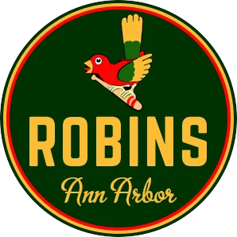

High Minors · LF
Jason Cooper
- Team
- Ann Arbor Robins
- Organization
- Detroit Wolverines
- Position
- LF
- Bats/Throws
- L/R
- Height/Weight
- 6'2", 215 lb
- Born
- Dec 6, 1980 in Richland, WA
- Age
- 21
- Uniform
- #82
2002 batting
| Team | Lg | G | PA | AB | R | H | 2B | 3B | HR | RBI | BB | K | SB | AVG | OBP | SLG | OPS |
|---|---|---|---|---|---|---|---|---|---|---|---|---|---|---|---|---|---|
| AnAr | High Minors | 19 | 65 | 58 | 7 | 23 | 4 | 0 | 2 | 11 | 5 | 10 | 3 | .397 | .462 | .569 | 1.031 |
2002 batting, advanced
| Team | Lg | PA | Pit/PA | SH | SF | HBP | IBB | GIDP | CS | OPS+ | ISO | BABIP | BB% | K% | WPA | UBR | WAR |
|---|---|---|---|---|---|---|---|---|---|---|---|---|---|---|---|---|---|
| AnAr | High Minors | 65 | 3.91 | 0 | 0 | 2 | 0 | 2 | 1 | 162 | .172 | .457 | 7.7% | 15.4% | 1.17 | -1.1 | 0.4 |
Streaks
Longest hitting streak: 4 games (Apr 8 to Apr 16); current: 2
Longest on-base streak: 4 games (Apr 8 to Apr 16); current: 2
Batting splits
| Split | G | PA | AB | R | H | 2B | 3B | HR | RBI | BB | K | SB | AVG | OBP | SLG | OPS | ISO | BABIP | BB% | K% |
|---|---|---|---|---|---|---|---|---|---|---|---|---|---|---|---|---|---|---|---|---|
| vs LHP | 8 | 12 | 10 | 2 | 8 | 3 | 0 | 0 | 2 | 1 | 1 | - | .800 | .833 | 1.100 | 1.933 | .300 | .889 | 8.3% | 8.3% |
| vs RHP | 17 | 53 | 48 | 5 | 15 | 1 | 0 | 2 | 9 | 4 | 9 | - | .312 | .377 | .458 | .836 | .146 | .351 | 7.5% | 17.0% |
| Home | 7 | 25 | 23 | 1 | 8 | 1 | 0 | 1 | 4 | 1 | 3 | 1 | .348 | .400 | .522 | .922 | .174 | .368 | 4.0% | 12.0% |
| Road | 12 | 40 | 35 | 6 | 15 | 3 | 0 | 1 | 7 | 4 | 7 | 2 | .429 | .500 | .600 | 1.100 | .171 | .519 | 10.0% | 17.5% |
By month
| Month | G | PA | AB | R | H | 2B | 3B | HR | RBI | BB | K | SB | AVG | OBP | SLG | OPS | ISO | BABIP | BB% | K% |
|---|---|---|---|---|---|---|---|---|---|---|---|---|---|---|---|---|---|---|---|---|
| April | 10 | 33 | 28 | 3 | 11 | 1 | 0 | 1 | 4 | 4 | 4 | 2 | .393 | .485 | .536 | 1.021 | .143 | .435 | 12.1% | 12.1% |
| May | 9 | 32 | 30 | 4 | 12 | 3 | 0 | 1 | 7 | 1 | 6 | 1 | .400 | .438 | .600 | 1.038 | .200 | .478 | 3.1% | 18.8% |
Situational
| Situation | PA | AB | H | 2B | 3B | HR | RBI | BB | K | AVG | OBP | SLG | OPS |
|---|---|---|---|---|---|---|---|---|---|---|---|---|---|
| Bases empty | 34 | 29 | 11 | 2 | 0 | 0 | 0 | 3 | 5 | .379 | .471 | .448 | .919 |
| Runners on | 31 | 29 | 12 | 2 | 0 | 2 | 11 | 2 | 5 | .414 | .452 | .690 | 1.141 |
| Runners in scoring position | 21 | 20 | 10 | 1 | 0 | 2 | 11 | 1 | 5 | .500 | .524 | .850 | 1.374 |
| RISP, two outs | 6 | 6 | 3 | 1 | 0 | 0 | 3 | 0 | 2 | .500 | .500 | .667 | 1.167 |
| Innings 1-3 | 18 | 16 | 4 | 1 | 0 | 0 | 2 | 2 | 5 | .250 | .333 | .312 | .646 |
| Innings 4-6 | 22 | 20 | 8 | 1 | 0 | 0 | 1 | 1 | 2 | .400 | .455 | .450 | .905 |
| Innings 7-9 | 24 | 21 | 11 | 2 | 0 | 2 | 8 | 2 | 3 | .524 | .583 | .905 | 1.488 |
| Extra innings | 1 | 1 | 0 | 0 | 0 | 0 | 0 | 0 | 0 | .000 | .000 | .000 | .000 |
Situational splits are rebuilt from every plate appearance in the export (base/out state when the PA began). "RBI" counts runs batted in on that PA.
2002 batting game log
| Date | Opp | Score | Pos | Bat | PA | AB | R | H | 2B | 3B | HR | RBI | BB | K | SB | CS | HBP | GIDP | WPA |
|---|---|---|---|---|---|---|---|---|---|---|---|---|---|---|---|---|---|---|---|
| May 13 | @ScRe | L 4-7 | DH | 7 | 4 | 4 | 2 | 3 | 2 | 0 | 0 | 1 | 0 | 1 | 0 | 0 | 0 | 0 | 0.259 |
| May 12 | @ScRe | W 7-3 | DH | 7 | 4 | 4 | 1 | 2 | 0 | 0 | 1 | 4 | 0 | 1 | 0 | 0 | 0 | 0 | 0.571 |
| May 9 | vsBuBi | L 1-4 | DH | 5 | 4 | 4 | 0 | 0 | 0 | 0 | 0 | 0 | 0 | 1 | 0 | 0 | 0 | 0 | -0.112 |
| May 7 | @AKRN | L 4-7 | DH | 6 | 4 | 4 | 1 | 2 | 1 | 0 | 0 | 0 | 0 | 0 | 0 | 0 | 0 | 0 | 0.135 |
| May 6 | @AKRN | L 1-11 | DH | 5 | 4 | 3 | 0 | 0 | 0 | 0 | 0 | 0 | 0 | 2 | 0 | 0 | 1 | 0 | -0.007 |
| May 5 | @AKRN | W 9-7 | DH | 7 | 4 | 4 | 0 | 2 | 0 | 0 | 0 | 1 | 0 | 1 | 0 | 0 | 0 | 1 | -0.075 |
| May 4 | vsJUMB | L 9-14 | DH | 7 | 4 | 3 | 0 | 2 | 0 | 0 | 0 | 1 | 1 | 0 | 0 | 0 | 0 | 0 | 0.094 |
| May 2 | vsJUMB | W 2-0 | DH | 7 | 3 | 3 | 0 | 0 | 0 | 0 | 0 | 0 | 0 | 0 | 0 | 0 | 0 | 1 | -0.116 |
| May 1 | @LOND | W 7-2 | LF | 8 | 1 | 1 | 0 | 1 | 0 | 0 | 0 | 0 | 0 | 0 | 1 | 0 | 0 | 0 | 0.002 |
| Apr 25 | vsSTLB | W 8-3 | DH | 8 | 4 | 3 | 0 | 1 | 0 | 0 | 0 | 0 | 0 | 1 | 0 | 0 | 1 | 0 | 0.001 |
| Apr 24 | @IOWA | L 4-5 | RF | 7 | 4 | 3 | 0 | 1 | 0 | 0 | 0 | 0 | 1 | 0 | 0 | 0 | 0 | 0 | 0.117 |
| Apr 23 | @IOWA | L 1-3 | RF | 7 | 4 | 3 | 1 | 2 | 0 | 0 | 0 | 0 | 1 | 0 | 1 | 0 | 0 | 0 | 0.129 |
| Apr 19 | vsOtLy | W 7-6 | PH | 8 | 1 | 1 | 0 | 0 | 0 | 0 | 0 | 0 | 0 | 0 | 0 | 0 | 0 | 0 | -0.013 |
| Apr 16 | @LVIP | L 1-3 | DH | 5 | 4 | 4 | 0 | 1 | 0 | 0 | 0 | 0 | 0 | 0 | 0 | 0 | 0 | 0 | 0.113 |
| Apr 12 | vsAsTo | L 9-12 | RF | 5 | 5 | 5 | 1 | 2 | 1 | 0 | 1 | 3 | 0 | 1 | 0 | 0 | 0 | 0 | 0.027 |
| Apr 11 | @PNSC | L 5-7 | RF | 5 | 5 | 3 | 1 | 1 | 0 | 0 | 0 | 1 | 2 | 2 | 0 | 0 | 0 | 0 | 0.104 |
| Apr 8 | vsChRi | L 0-3 | DH | 5 | 4 | 4 | 0 | 3 | 0 | 0 | 0 | 0 | 0 | 0 | 1 | 0 | 0 | 0 | 0.078 |
| Apr 6 | @WVMO | L 2-13 | RF | 1 | 1 | 1 | 0 | 0 | 0 | 0 | 0 | 0 | 0 | 0 | 0 | 0 | 0 | 0 | 0.000 |
| Apr 3 | @FMMM | L 3-5 | PH | 6 | 1 | 1 | 0 | 0 | 0 | 0 | 0 | 0 | 0 | 0 | 0 | 1 | 0 | 0 | -0.139 |
2002 fielding by position
| Team | Lg | Pos | G | GS | Inn | TC | PO | A | E | DP | FPct | ZR | Arm | Framing | SB | CS | CS% | PB |
|---|---|---|---|---|---|---|---|---|---|---|---|---|---|---|---|---|---|---|
| AnAr | High Minors | RF | 5 | 4 | 36.0 | 10 | 10 | 0 | 0 | 0 | 1.000 | -1.9 | 0.5 | - | - | - | - | - |
| AnAr | High Minors | LF | 1 | 0 | 3.0 | 0 | 0 | 0 | 0 | 0 | - | 0.0 | 0.0 | - | - | - | - | - |
ZR (zone rating), Arm and Framing are OOTP's runs-above-average figures. SB/CS/CS% are base stealers against him as a catcher.
Career batting
| Year | Team | Lvl | G | PA | AB | R | H | 2B | 3B | HR | RBI | BB | K | SB | AVG | OBP | SLG | OPS | WAR |
|---|---|---|---|---|---|---|---|---|---|---|---|---|---|---|---|---|---|---|---|
| 2002 | AnAr | High Minors | 19 | 65 | 58 | 7 | 23 | 4 | 0 | 2 | 11 | 5 | 10 | 3 | .397 | .462 | .569 | 1.031 | 0.4 |
Service time & contract status
- Service time
- 0.000 (0 days; 0 this season)
- Status
- Pre-Arb
- Arbitration
- Not projected
- Free agency
- Not projected
- Options
- 0 used, 3 remaining (of 3)
No projection: no major-league service yet and not on an MLB, ABL or FBL roster.
Service time is Y.DDD: major-league service years plus days toward the next year (172 days = 1 year, from the league rules). Status follows the league rules: under 3 years Pre-Arb, 3 to 5 years Arb 1/2/3, 6+ years FA-eligible. The export's arbitration_offering is 0 and no player has gone through arbitration yet (has_received_arbitration is 0 for everyone), so these statuses come from the rules, not from hearings. Projected years assume a full major-league season of service every year from 2002 on.
Most frequent matchups pitchers he has faced
| Pitcher | AB | H | HR | AVG |
|---|---|---|---|---|
| Andy Van Hekken | 3 | 3 | 0 | 1.000 |
| Dan Curtis | 3 | 2 | 0 | .667 |
| Chandler Martin | 3 | 2 | 0 | .667 |
| Marcus Jones | 3 | 1 | 0 | .333 |
| Mike Thompson | 3 | 1 | 0 | .333 |
| Jake Dittler | 3 | 1 | 0 | .333 |
| Mark Nussbeck | 3 | 0 | 0 | .000 |
| Ron Chiavacci | 3 | 0 | 0 | .000 |
| Blake McGinley | 2 | 2 | 0 | 1.000 |
| Brian Whitaker | 2 | 1 | 0 | .500 |
| Larry Wimberly | 2 | 1 | 0 | .500 |
| Mike Romano | 2 | 1 | 0 | .500 |
| Julio Villalon | 2 | 1 | 1 | .500 |
| Shawn Onley | 2 | 0 | 0 | .000 |
| Kevin Correia | 2 | 0 | 0 | .000 |